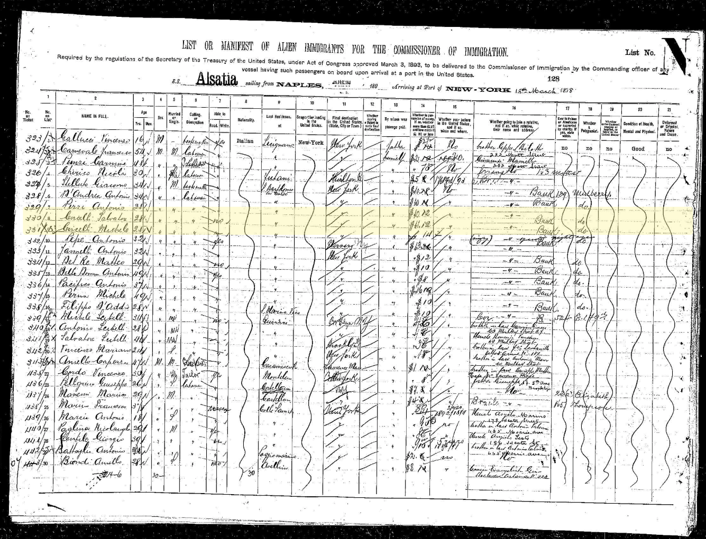
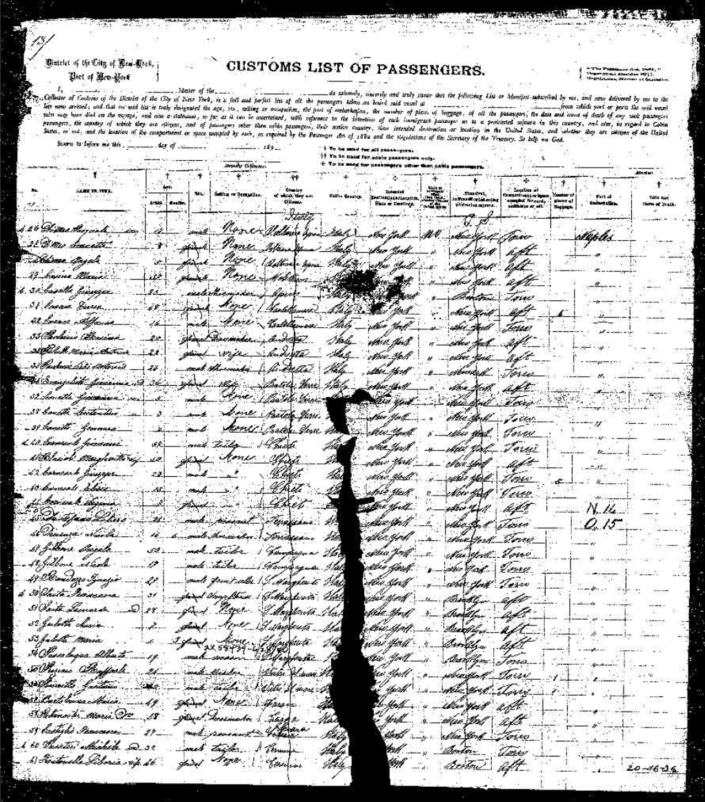

San Bartolomeo in Galdo to 46 Mechanic Street
The Town They Left Behind
San Bartolomeo in Galdo sits at roughly 700 metres above sea level in the Apennine mountains of Campania, about 90 kilometres northeast of Naples. The town belongs to the Province of Benevento and falls under the Archdiocese of Benevento. Its patron saint is San Bartolomeo — Saint Bartholomew.
Today it has a population of around 4,000. In the early 1900s it was closer to 12,000. The difference is emigration. San Bartolomeo in Galdo lost more than half its population between the 1880s and the mid-20th century, most of them bound for America. Rocky Marciano's mother, Pasqualina Picciuto, emigrated from the same town.
About 15 kilometres away sits the town of Circello, whose patron saint is San Michele Arcangelo — Saint Michael the Archangel. The Circelli surname almost certainly derives from this town. And the Belfiore family named their eldest son Michele.
San Bartolomeo in Galdo
Province of Benevento, Campania. ~700m elevation. ~90 km NE of Naples, ~50 km from Benevento, ~40 km from Foggia. Population ~4,000 (down from ~12,000). Archdiocese of Benevento. Parish records back to 1600s.
Circello
~15 km from San Bartolomeo. Patron saint: San Michele Arcangelo. Population ~2,400. The Circelli surname almost certainly derives from this town. The first Belfiore son was named Michele.
Naples
The great emigration port. Maria departed from here on the SS Oregon in 1896. All known Circelli and Belfiore passengers on Ellis Island records departed from Naples.
Evidence Linking the Family to San Bartolomeo
Circelli Surname Concentration
All 52 indexed Circelli records on Italy's Antenati civil records portal originate from San Bartolomeo in Galdo. The surname appears nowhere else in Italy's digitized records. Source: antenati-italiani.org.
ItalianSide.com Confirmation
Lists "Circelli" as one of the historic surnames of San Bartolomeo in Galdo, alongside Apicella, Colatruglio, Delle Donne, and Pacifico.
Italy Heritage Birth Records
Records multiple Circelli births in San Bartolomeo in Galdo throughout the 1870s and 1880s — the generation that produced Maria Doreta.
Ellis Island Passenger Records
Multiple Circelli passengers list their last residence as variations of San Bartolomeo in Galdo, all misspelled by American immigration clerks: "S.Dartolomeo in Calor," "S. B. Ingoldo," "S. Rasdeloan in Galdo Grass," "S. Barto Cmno," "S. Bartol.in G." All confirm the same town.
The Chain Migration
The Circelli-Belfiore immigration followed the classic chain migration pattern. It didn't happen all at once — it unfolded over years, with each arrival making the next one possible.
Circelli Relatives Pioneer the Route
Giuseppe Circelli arrived in 1888 on the Comorin. In 1891, multiple Circellis followed: Giovannio on the Utopia, Giuseppe on the Chandermayor, and Antonio and Francesco together on the Iniziativa. These were likely Maria's brothers, cousins, or father — establishing the pipeline from San Bartolomeo to New York.
Did the Patriarch Come to America?
The evidence strongly suggests no. No immigration record for Leonardantonio Belfiore (or any variant) has been found. Maria traveled under her maiden name Circelli, not Belfiore — after 12 years of marriage, a woman traveling with her husband would appear under his surname. Michael's draft cards don't reference a living father. The most likely explanation is that Leonardantonio died in Italy before 1896, which would explain why Maria's Circelli relatives followed her to America shortly after — to support a widowed sister. The 1900 census for New Rochelle is the critical record: if Leonardantonio appears, the narrative changes entirely.
Maria Doreta Circelli on the SS Oregon
Maria crossed the Atlantic on the SS Oregon from Genoa and Naples, arriving at Ellis Island on December 2, 1896. She traveled under her maiden name Circelli — strongly suggesting she was a widow relying on her Circelli family network for the crossing. The Ellis Island Foundation confirmed her record: "Circelli, Maria Doreta."

Ellis Island passenger record: "Circelli, Maria Doreta" — SS Oregon, arrived December 2, 1896, from Genoa and Naples.
More Circellis Follow
The migration from San Bartolomeo continued: Masella and Filomeno Circelli on the Olympia (1896, same year as Maria). Michele and Salvatore on the Alsatia (1898), traveling together on Lines 8–9, Frame 790, List 128, listing their origin as "S.Dartolomeo in Calor" — almost certainly Maria's brothers or cousins, following her to support a widowed sister. Bartolomeo on the Tartar Prince (1898). Romnaldo and Matteo on the Werra (1900). Silverio on the California (1901). Donato Maria on the Duca di Genova (1901). An entire community was transplanting itself to America.
SS Sant'Anna — The Final Circelli Crossing
The last known Circelli arrival: a passenger on the SS Sant'Anna in 1911, from Naples. By this point, the chain migration from San Bartolomeo in Galdo had been running for over two decades. The community was established in New Rochelle, and the pipeline from southern Italy was well-worn.
46 Mechanic Street, New Rochelle
The family settled at 46 Mechanic Street, New Rochelle, New York — a commercial street in the heart of downtown, parallel to Division Street. The old City Hall stood at Main and Mechanic. The street was a "sister street" to Division, the commercial heart of the city.
Anthony, Maria, Michael, Frances, and their children all lived at this address. Michael lived there for 58 years — from approximately 1894 until his death in 1952. The house was demolished around 1960 during New Rochelle's urban renewal programme. The street was renamed Memorial Highway. A section near Main Street became "Raizen Plaza."
The approximate location today is on Memorial Highway, between Main Street and the New Rochelle Public Library, at approximately 40.911°N, 73.783°W.
46 Mechanic Street
Now Memorial Highway, between Main Street and the New Rochelle Public Library. Home to at least three generations of Belfiores from ~1894 to ~1960.
Holy Sepulchre Cemetery
95 Kings Highway, New Rochelle, NY 10801. Maintained by Blessed Sacrament Church. Michael buried here Jan 19, 1952. Likely also Anthony, Maria, Frances. Founded 1886. Enquiries: $25 fee, must be in writing.
Blessed Sacrament Church
15 Shea Place (Centre Avenue), New Rochelle. Stone Gothic Revival building completed 1897 to serve the growing Italian immigrant population. May hold baptismal, marriage, and burial records for the Belfiore family.
Wykagyl Country Club
Where Sammy became assistant golf pro. Sisters Rose and Caroline lived at "Wykagyl Gardens" nearby.
The Circelli Migration Network
The Ellis Island passenger records reveal the full scale of the Circelli migration from San Bartolomeo in Galdo. These are Maria's relatives — brothers, cousins, nephews — all from the same small mountain town.
| Name | Year | Origin on Manifest | Ship |
|---|---|---|---|
| Circelli, Guiseppe | 1888 | Italy | Comorin |
| Circelli, Givannio | 1891 | Italy | Utopia |
| Circelli, Guiseppe | 1891 | Italy | Chandermayor |
| Circelli, Antonio | 1891 | — | Iniziativa |
| Circelli, Francesco | 1891 | Italy | Iniziativa |
| Circelli, Tommaso | 1893 | — | Chandernagor |
| Circelli, Benedetto | 1895 | — | Furst Bismarck |
| Circelli, Masella C. A. | 1896 | — | Olympia |
| Circelli, Filomeno | 1896 | — | Olympia |
| Circelli, Maria Doreta | 1896 | — | SS Oregon |
| Circelli, Michele | 1898 | S.Dartolomeo in Calor | Alsatia |
| Circelli, Salvatore | 1898 | S.Dartolomeo in Calor | Alsatia |
| Circelli, Bartolomeo | 1898 | S. B. Ingoldo | Tartar Prince |
| Circelli, Romnaldo | 1900 | S. Rasdeloan in Galdo Grass | Werra |
| Circelli, Matteo | 1900 | S. Barto Cmno | Werra |
| Circelli, Silverio | 1901 | S. Bartol.in G | California |
| Circelli, Donato Maria | 1901 | — | Duca di Genova |
| Circelli (first name unknown) | 1911 | — | SS Sant'Anna |

Ellis Island passenger record: "Circelli, Michele" — SS Alsatia, arrived March 19, 1898, from Naples. Line 9. Almost certainly Maria's brother or cousin.

SS Alsatia manifest (List 128, arriving March 1898) — Michele and Salvatore Circelli highlighted on consecutive lines, traveling together from "S.Dartolomeo in Calor" (San Bartolomeo in Galdo).

Customs List of Passengers for the SS Oregon — the ship that carried Maria Doreta Circelli to America in December 1896.
Note: The misspellings on the "Origin" column are exactly as they appear on the Ellis Island manifests — written by American immigration clerks attempting to spell San Bartolomeo in Galdo from the passengers' spoken Italian. Every one of these is the same town.
The Belfiore Surname — A Foundling's Gift
The name Belfiore is Italian: from bel ("beautiful") + fiore ("flower") = "beautiful flower." In this family's case, however, it was not inherited. The 1884 marriage record reveals that Leonardantonio Belfiore was a foundling — the son of padre ignoto and madre ignota (both parents unknown).
What is a foundling? A foundling is a child who was abandoned by their parents — left at a church, hospital, or institution to be raised by others. In 19th-century Italy, this was devastatingly common, particularly in the impoverished south. Foundling homes, called brefotrofi, received thousands of infants each year. The mechanism of abandonment was the Ruota dei Proietti — literally the "wheel of the abandoned." This was a revolving wooden cylinder built into the exterior wall of a church or hospital. A parent could place their newborn into the wheel from the outside, turn it so the baby passed through the wall to the inside, ring a bell to alert the nuns or attendants, and leave — all without ever being seen. The child would be taken in, baptized, and given a new name.
Leonardantonio's parents — not Leonardantonio himself — placed him on this wheel. He was the one abandoned, not the one who chose to leave. The foundling home raised him, baptized him, and assigned him the surname "Belfiore." This was standard practice: Italian foundling institutions gave their charges invented surnames, often drawn from nature, virtues, or beauty. Names like Esposito ("exposed one" — the most common surname in Naples, nearly always marking foundling origin), Innocenti ("the innocent"), Proietti ("cast out"), and Diotallevi ("God raise him") are hallmarks of foundling origins across Italy. "Belfiore" — beautiful flower — fits this pattern precisely. Someone at that institution — a nun, a priest, a civic official — looked at an abandoned infant and chose to name him "beautiful flower."
This means the Belfiore genealogical line cannot be traced further back than Leonardantonio himself. He is where the name begins. There are no Belfiore ancestors — the name was invented for him. The family's deeper roots run through Maria Donata's Circelli line — to her parents, Giuseppe Circelli and Marianna Mita of San Bartolomeo in Galdo.
The noble Conti Belfiore documented in Crollalanza's 1888 Dizionario Storico-Blasonico, with a coat of arms featuring "azure with a golden garden lily," have no connection whatsoever to this family. Leonardantonio's "Belfiore" was a civic creation born of abandonment, not inheritance.
The name was sometimes Americanized to "Belfore" (as Sammy did), or misspelled on documents as Belfiori, Belfior, Belfoire, or Belefore.
Sammy's obituary records the matriarch's maiden name as "Cicelli" — another variant spelling. The family name evolved across three forms: Circelli (the original Italian), Belfiore (the foundling name carried to America), and Belfore (Sammy's Americanized spelling). Each generation reshaped the name for a new context.